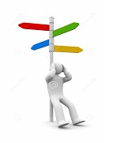

More Website Templates @ TemplateMonster.com. July 30, 2012!
青春 迷茫
时间在流去，我们在长大。有时青春很迷茫，有时青春也会坠落，所以我们常会对青春漫想：青春是什么？是生命中火一般的季节；青春写什么？写一首漫长漫长的诗歌；青春留什么？留一个没有遗憾的遗憾。我们需要明白：青春不是风花雪月，青春也不是红杏绿柳，青春更不是富丽的象牙塔，它是生命的一个阶段，是人生渐渐成熟的过程。
青春是首不悔的诗。有一首诗最为动人，那就是青春；有一段人生最美丽，那就是青春；有一道风景最为亮丽，那就是青春。请不要说青春已疲惫，也许你的幻想曾被现实无情的毁灭，也许你的追求毫无结果，但你应该相信，没有寒风的洗礼，哪来万紫千红的春天？没有辛勤的耕耘，哪有累累硕果？青春是一首不悔的诗。
About Choice

面对选择
总是困难
许多人之所以在生活中一事无成，最根本原因在于他们不知道自己到底要做什么。在生活和工作中，明确自己的目标和方向是非常必要的。只有在知道你的目标是什么、你到底想做什么之后，你才能够达到自己的目的，你的梦想才会变成现实。
一步步走来，长大后，我们又开始选择梦想，接着我们为此不断的奋斗，在奋斗中不断的选择，随着人生的继续，我们依然要不断的选择下去。
我不喜欢说话却每天说最多的话，我不喜欢笑却总笑个不停，身边的每个人都说我的生活好快乐，于是我也就认为自己真的快乐。
可是为什么我会在一大群朋友中突然就沉默，为什么在人群中看到个相似的背影就难过，看见秋天树木疯狂地掉叶子我就忘记了说话，看见天色渐晚路上暖黄色的灯火就忘记了自己原来的方向。